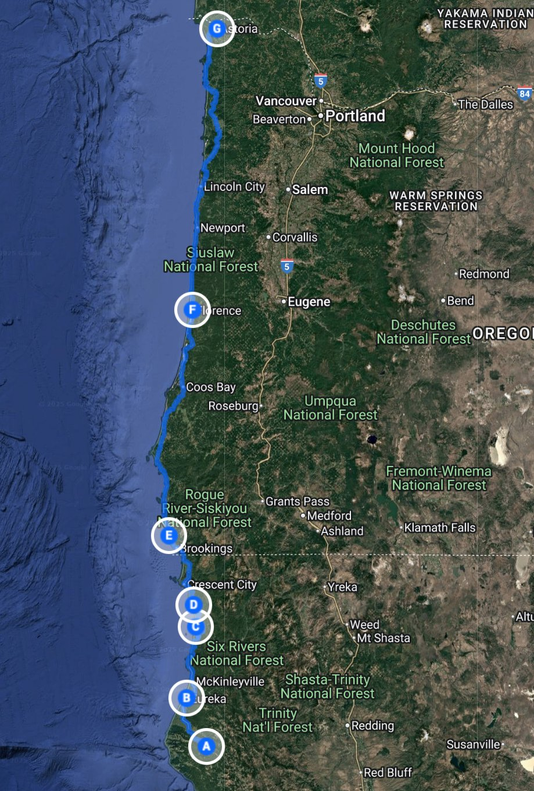

about us
Our Coastal Crew
Family of four
Our coastal crew is made up of two adventure-loving parents and their two
energetic children. Many years ago, before settling down and having our boys,
we made this very same road trip, just the two of us. We fell in love with
the winding coastal highways, misty forests, and wide-open beaches. Now,
based in the foothills of Mount Tamalpais, we spend weekends hiking and
exploring the coastline. It felt natural for us to share this journey
with our kids. We love the balance of untamed nature and old town charm
that this route presents. This trip was our way of blending old memories
with new ones, this time as a family of four.
Having grown up on the other side of the world, Shannon brings an international
lens to the journey. Shannon called Taipei, Taiwan, and Kyoto, Japan home during
his formative years. He’s passionate about drawing, writing, traveling, baseball,
and being in the presence of nature. Jenine is a California native; at home among
the redwoods and by the ocean. She’s happiest when hiking, swimming, drawing,
designing, and raising the boys in outdoors. Jasper, age 13, is a thoughtful
reader, a loving big brother, and a dedicated baseball and basketball player.
Felix, age 7, is a high-energy second-grader who is constantly moving. He loves
baseball, his big brother, and inviting everyone to play and enjoy life with him.
Together, this crew made the most of every stop, from the forests to the waves.
See Us on Instagram
map
The Journey

Our journey began among the towering redwoods on the Avenue of the Giants in Northern
California. Our first stop was the visitor’s center to learn about the ancient trees
and the park that housed them. We then explored iconic sites like the Flatiron Tree,
Founder’s Tree, and the majestic Giant Tree. A peaceful moment by the gorgeous Eel
River that winds through the groves gave us a deeper sense of quiet beauty. We
proceeded to drive towards Eureka for dinner at Hunan Restaurant, where the standout
dish was the chicken chow mien. Satisfied and with our bellies full, we toured
historic Eureka. We stopped at the charming Carson Mansion, also known as the Ingomar
Club. Built in the 1800s, this intricate four-story, 18-room house with a tower and
basement is unlike anything else in California. We spent the night in a cozy Airbnb,
laughing, resting and recharging for more adventure. Day two took us to the dramatic
coastline at Wedding Rock in Sue-meg State Park. We climbed a massive boulder
overlooking the Pacific Ocean. We then proceeded to Lady Bird Johnson Grove Trail
which wanders under an amazing collection of sky-scraping redwoods. Craving the
ocean again, we headed north to the Samuel H. Boardman Scenic Corridor, where we
visited Long Ranch Beach. We loved feeling the sand between our toes and the
gentle waves caressing our ankles.
It w as getting late, so we continued to Bandon, Oregon for dinner. A nighttime drive brought
us to our cute wood-paneled cabin-style hotel room in Florence, Oregon. The next morning,
we woke up early to explore the massive dunes at Honeyman State Park. We hiked, climbed,
played in, rolled down and got really dirty in the cool and welcoming sand dunes.
Exhausted and starving, it was time to grab lunch at the Dunes Café. Satisfied and
energized, we followed the coast north, stopping in Yachats for tea and ice cream,
and later hiking a creekside trail to the beach in Oswald West State Park. We reached
Astoria for a delicious dinner at Fulio’s Italian restaurant in the historic downtown
district. Leaving the incredible bridges of Astoria behind us we proceeded to
Vancouver, Washington to visit family. The next day, we drove over an old steel
drawbridge into Portland to see some live music, drink Moscow Mules, eat hamburgers,
and be devious with some donuts. McMenamins White Eagle Saloon hosted one of our
favorite blues artists in an intimate setting. We capped the night by buying some
souvenir T-shirts and the iconic bar and by devouring some Portland vegan Voodoo Donuts.
The next day brought high energy and laughs at a Portland Pickles baseball game.
The home team won, we ate vegan hotdogs (with sourkraut and mustard), we saw a dog
parade out on the field, and we didn’t get lost driving home at night; so it was a
fantastic night. We ended the adventure in Salmon Creek with an exhilarating white
water rafting trip that included a risky and exciting class five waterfall challenge.
Jasper was not happy that he couldn’t join in the near-vertical drop. We soothed the
issue by promising that we would come back and do it again. This is a promise that
none of us doubt we will follow-through on. The next day, we headed in the direction
of home but we were not done. Incredible hikes to Watson Falls and Toketee Falls were
amazing and pushed our hiking skills just a little passed what we were used to.
With a brief stay in Klamath Falls, we set out early the next day to return home to
our shire. The road winded through Weed, California and under the shadow of Mount
Shasta. We stopped to interact with some Lemurians at a metaphysical store in the
town of Mount Shasta, but the store didn’t open util 11am and we had to get on the
road, maybe next time, little buddies. If you are driving through Redding California,
please stop at Anthony’s Mediterranean Grill for some delicious kabobs, hummus, and
baklava; the friendly staff took really good care of us. There are things in life
hat you talk about for a very long time after they are completed. There hasn’t been
a day since our trip that we haven’t thought about or talked about something that we
experienced on this expedition. Our journey was clearly unforgettable and brought
us closer together. Go do something with the people you love, now is the time!
View on Goolge Maps